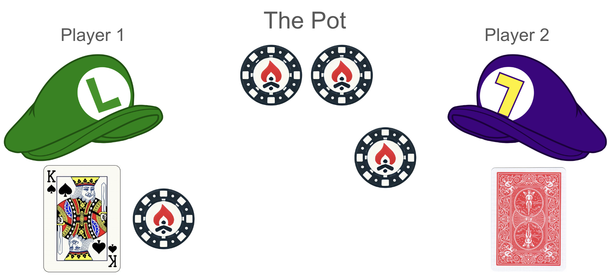

#1: Kuhn Poker | Challenge (Part 1)
Pre-Challenge: Visualizing a game tree
To analyze Kuhn Poker further, we’ll represent the game in terms of a visual game tree.
First, deal one card to and one card to . Each possible deal of the cards forms a separate “game node”. For example, AK means that has A and has K:
will act first. He knows what his card is, but not what card has, so he can be in one of 3 information sets, or infosets. An infoset is a set of nodes that are indistinguishable to the player, meaning that they don’t know which of the states they are in and will act with the same strategy at all of them. They are identified by the player card and the previous actions and are the labels in bold in the game tree.
We’ll name ’s infosets A_, K_, and Q_ based on what card he holds:
At each infoset, can choose ↑Up or ↓Down. Note that the probaility with which he chooses ↑Up (versus ↓Down) from a given infoset will have to be the same for both nodes, since they are indistinguishable to .
Each ↑Up or ↓Down action will each take us to a distinct game node, based on a unique set of cards and action history:
Next, will act. He can observe his card and ’s first action, but not ’s card, so those pieces of information characterize his infoset. We’ll give ’s 6 infosets names like _K↓ and _Q↑ based on his card and the action:
At each of these infosets, can choose ↑Up or ↓Down:
If the actions were ↓Down, ↑Up (“check–bet”), then will have to act again. Otherwise, the game is now over (with a payoff determined by the cards and the action sequence). Recall the 5 sequences of betting, which end either in one player folding (after an ↑Up then ↓Down, a “bet–fold”) or the higher card winning at showdown, which results from either two ↓Downs (“check–check”) or two ↑Ups (“bet–call”).
We’ll write the payoffs from ’s perspective, and remember that ’s payoffs will be the inverse:
If still has to act, he’ll be in one of just three infosets, A_↓↑, K_↓↑, or Q_↓↑:
…and can choose ↑Up or ↓Down…
…but whatever he chooses, the game will end after that move. We now have the entire game tree for Kuhn Poker:
Kuhn Poker strategies
Each player’s strategy can be completely described in terms of their action probabilities at each infoset (6 of them per player).
Example 1: Determining a local best response
Let’s start by considering ’s decision at the infoset K_↓↑. When is at K_↓↑, he doesn’t know whether the true state of the world is KA↓↑ or KQ↓↑. This is what the game looks like from ’s perspective:

As we said earlier, whatever action (or randomized mix of actions) ’s strategy says to make, he will be doing so in all of the situations where he arrives at K_↓↑, without the ability to do different things at KA↓↑ vs KQ↓↑.
If we start by assuming that both players play 50-50 randomly (50% ↑Up at each infoset), then would arrive at K_↓↑ via KA↓↑ equally often as via KQ↓↑. In this case, his expected payoff for playing ↑Up is a 50%-50% weighted sum of the payoffs KA↓↑↑ (-2, calling with K when opponent has A and losing at showdown) and KQ↓↑↑ (+2, calling with K when opponent has Q and winning at showdown), for an expected value of 0. The expected value, or EV, of a situation is the value of each outcome weighted by the probability of that outcome.
Similarly, his expected payoff for ↓Down is a 50%-50% weighted sum of the payoffs for KA↓↑↓ and KQ↓↑↓, though in this case they’re both -1 and the EV doesn’t depend on the composition weights of the infoset (since he folds and loses exactly one chip either way).
With these expected values, ’s at this infoset (holding everything else about both strategies constant) is to play ↑Up 100% of the time.
But what if the probabilities of reaching K_↓↑ via KA↓↑ versus KQ↓↑ aren’t equal? If the players don’t play 50-50 randomly, then we’ll have to separately calculate the probability of reaching KA↓↑ (including the probability of the initial KA deal) and the probability of reaching KQ↓↑ (likewise); the composition of the infoset will be proportional to the the probabilities of reaching these states—as we’ll see in our next example. (In larger games, we might approximate these reach-state probabilities by sampling games with simulated play instead of calculating them analytically.)
Example 2: Changing local best responses
Consider ’s actions at _Q↓ (“having a Q facing a check”). If plays ↓Down (action sequence: “check–check”), he will go to showdown, always have the worse card, and get a payoff of -1.0 (+1.0). If he plays ↑Up (“bets”), then it will be ’s turn to act.
If were to play randomly at K_↓↑, then ’s ↑Up would get a payoff of -0.5 (+0.5), since half the time will play ↓Down (“fold”, +1) and half the time he will ↑Up (“call”, showdown, -2).
Note that ’s Q is always the worse hand and an ↑Up action is a bluff, but if plays ↓Down (“folds”) often enough, then can win enough +1s to do better than always taking a 1-chip showdown.
But recall that in the previous section, we thought should always play ↑Up at K_↓↑. In that case, ’s payoff for playing ↑Up at _Q↓ becomes -1.25 (+1.25), worse than -1 for playing ↓Down, and so he should play ↓Down instead of ↑Up.
This example shows the core difference between solving perfect-information games and imperfect-information games. In Kuhn Poker, when a random switches to only playing ↓Down at _Q↓, ’s payoff EVs at K_↓↑ change (because now that infoset is only composed of KA↓↑ and no KQ↓↑). With the resulting EVs, has a payoff of -2 for playing ↑Up, and should play ↓Down to get -1 instead. (But now should…)
In a perfect information game, we can find each player’s best action in each game situation inductively, by passing up the tree from the end-states and determining each situation in terms of known solutions to its successor nodes. And whatever the best thing to do at the downtree node was, it’ll still be the best thing to do, regardless of how we get there.
But in an imperfect information game, changing an uptree strategy parameter can change what the best response is at downtree infosets, so we can’t solve a game in a single pass from the endgames to the beginning. Nearly every game-solving technique for imperfect information games, then, is based on taking a strategy for each player and iteratively improving on both based on local improvements until they resolve on something like a Nash equilibrium.
There are two types of uncertainty in an imperfect-information game:
Uncertainty about which node we are actually in (depending on strategy and chance probabilities upwards in the game tree).
Uncertainty about what happens after an action (depending on the strategy and chance probabilites downwards in the game tree).
Challenge
The goal of this challenge is to find optimal strategies for Kuhn Poker in terms of the fixed action probabilities at each player’s 6 infosets. For this challenge, we recommend that you submit strategies that form a Nash equilibrium (or equivalently, a pair of strategies such that neither player has regret). You will submit strategies for both players (12 probabilities total) and be matched against many opponents (but not yourself); your average score across all matchups will be the basis of your leaderboard rank. For each opponent, you will play an equal number of times as and as .
Part 1: Manual Solutions
When you get a pair of strategies such that each infoset is at most 0.1 chips of EV away from regret-free, a link to the next stage will appear at the bottom of the page. You will be able to fine-tune your strategy in the next stage before submitting it to the leaderboard.